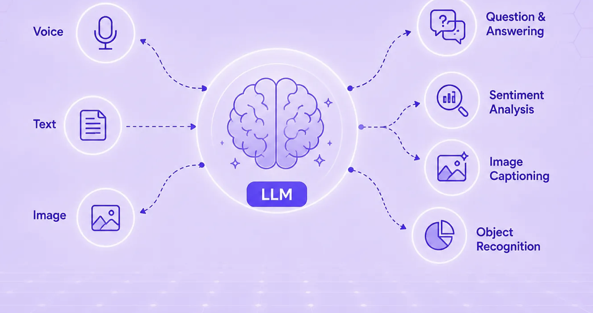
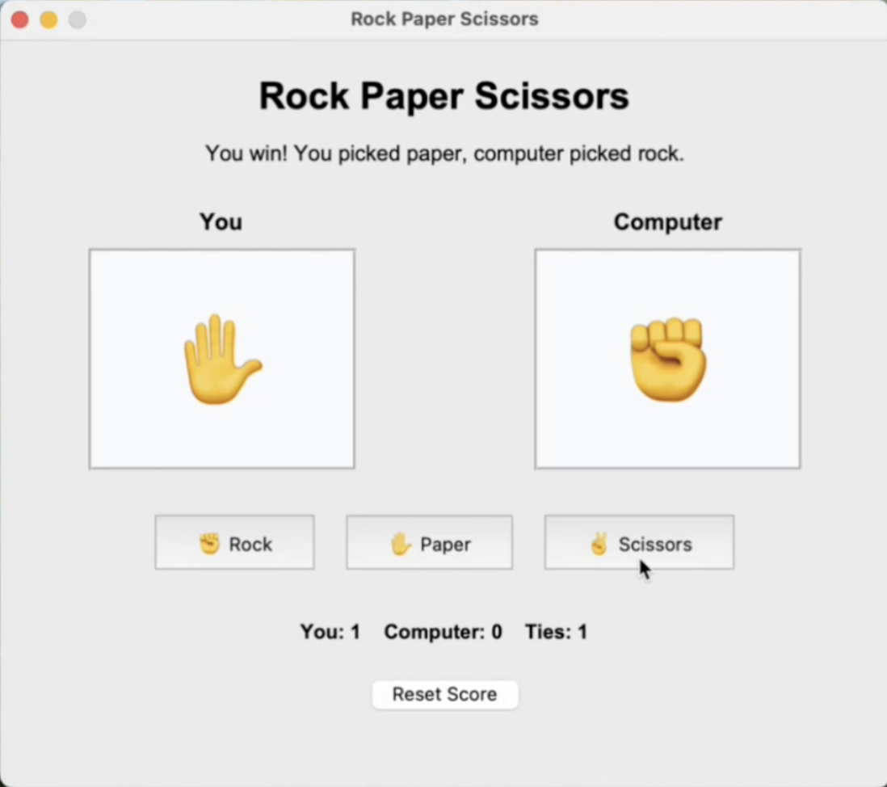

Python 编程
Python 编程思考 · 创造 · 成长
学编程 · 探索 AI ·
创造未来。
好好创想 · HaoHao CodeLab 为 4–12 年级学生提供融合编程、计算机科学与人工智能（AI）的实践型、项目制课程。通过探索前沿技术、动手构建真实项目，帮助学生建立扎实的技术基础，培养计算思维与独立解决问题的能力，并自信地运用科技与 AI 将创意变为现实。
马萨诸塞州 Lexington 面授
也提供远程课程
也提供远程课程
Python 编程 API 与 Web Service
API 与 Web Service
大语言模型✦
4–12 年级适合不同学习阶段
小班教学更多关注与反馈
项目实践在创造中真正学习
课程计划
从编程基础走向
AI 创新
通过系统化、阶梯式的课程设计，引导学生从编程语言、算法与数据结构入门，逐步掌握软件开发与实际应用，再进一步探索人工智能与大语言模型，运用所学技术开发自己的创意项目。
部分项目展示
学生通过游戏、工具和系统项目，把计算机科学知识应用到真实创作中。

认识老师——郑好
郑好 | HaoHao CodeLab 创始人兼老师
拥有 10 年编程经验，其中包括 8 年在领先科技公司的软件开发与算法工程工作经历，具备扎实的技术功底，以及对编程语言、算法和软件开发的深入理解。
拥有 5 年教学经验，熟悉中小学生的学习特点与思维方式，善于与孩子沟通，能够敏锐地发现学生在学习过程中遇到的困难，并帮助他们找到问题的关键。
我始终相信，每个孩子都有不同的学习节奏和理解方式。因此，我坚持自主设计和编写教学教材，结合中小学生的认知特点、学习规律和兴趣，精心构建循序渐进的课程体系。从课程内容、知识结构到实践项目，每一个环节都经过反复设计、测试与优化，力求让复杂的计算机科学知识变得清晰、易懂且富有趣味。
在教学中，我注重耐心引导、清晰讲解与项目实践，帮助学生拆解复杂概念、克服学习困难，在不断探索和动手创造的过程中建立扎实的知识基础与学习信心。
我的目标不仅是教会学生编程，更希望帮助他们培养独立思考、逻辑推理和解决问题的能力，让他们能够运用所学知识与技术，将自己的想法变成现实。
从这里开始
让兴趣成为创造的起点
预约一次免费试听，
和我们一起探索编程与 AI 的精彩世界。